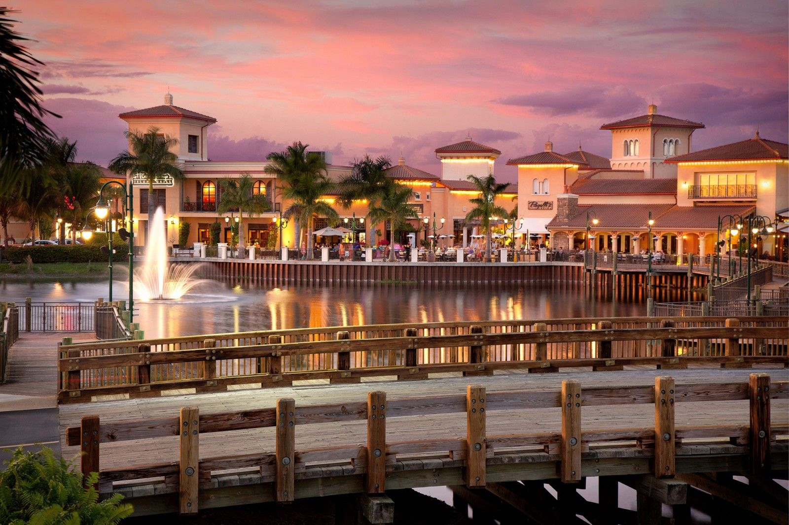

Transportation
TransportationTake the drive
See how road projects and traffic decisions shape your daily commute.
Explore → Council
CouncilYou're on the council
Step into five real cases and see how the Village voted.
Explore →
DevelopmentGuess the hotspot
Can you spot where the most decisions landed?
Explore → Timeline
TimelineA look back
Scrub through 2015 to 2026 and watch the map fill in.
Explore →
01 Explore the map
See what's happening across Estero
Browse by who sponsors a project, then its category, the project itself, the decisions made on it and the documents behind them. Check or uncheck a layer to show or hide it. The map also shows every decision in the live EagleGIS records.
Contents
Decision filters ·
Matching items

0
decisions along this road
Look closely…
Think about where shops, new homes and big roads meet.
No guess yet. Tap anywhere on the map.


06 Our community
Still curious? Ask about any spot.
Ask EagleGIS a question in plain English. Every answer links back to the meeting it came from. Or go straight to the source.
Real people. Real places. Our Estero.